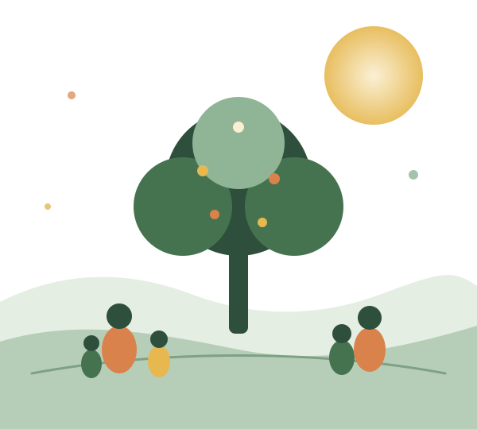
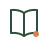
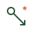
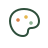
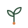
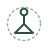

From a Dream to Reality — Building a Sustainable Community, Together
Mehrpouyan Sabz Andisheh (MSANGO) has worked since 2016 in the marginal Arzanan neighborhood of Isfahan, focused on adult education, empowering women and children, and participatory local development.

Supporting the growth of vulnerable social groups and underserved neighborhoods
Relying on existing social capital and active community participation, we take steps — however small — to empower and develop deprived communities in marginal urban and rural areas, while promoting a culture of peace and cooperation.
Our educational programs and workshops

Literacy & Reading Club
Adult literacy classes and a reading club for women and children in Arzanan.
English Language
Free, ongoing basic English classes for children and teenagers.

Dressmaking
Sewing and dressmaking training for women to build professional, income-generating skills.

Arts & Handicrafts
Creative workshops in arts and handicrafts to nurture imagination and manual skills.
Cooking & Nutrition
Healthy nutrition and home-cooking education for mothers and families.

Environmental Awareness
Workshops to build environmental awareness among children and teenagers.
Life Skills
Life-skills, parenting, and youth self-care courses.

Yoga
Yoga classes to reduce stress and support the mental wellbeing of women and teens.
Human dignity and equal access to opportunity
We believe in human dignity, agency, and equal access to resources and opportunities for growth — especially for women and children facing disadvantage — alongside a commitment to poverty reduction, social justice, and sustainable peace.
More about us"A participatory approach to education, activities, and governance — a development-oriented, peace-building view aimed at reducing poverty and advancing social justice."
Join our community of supporters
Every contribution, however small, creates a chance for a child or family in Arzanan to learn and grow.